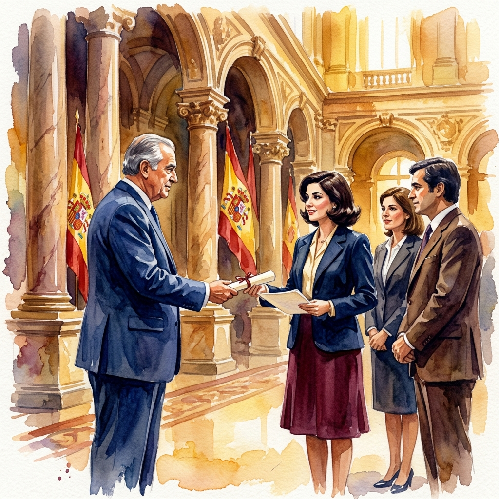
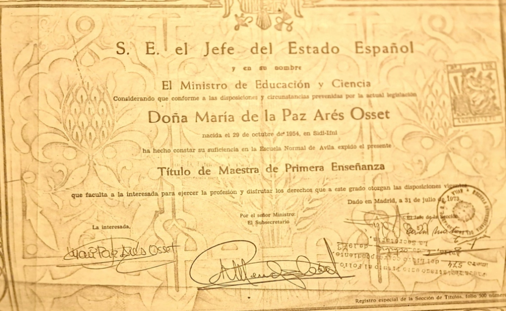
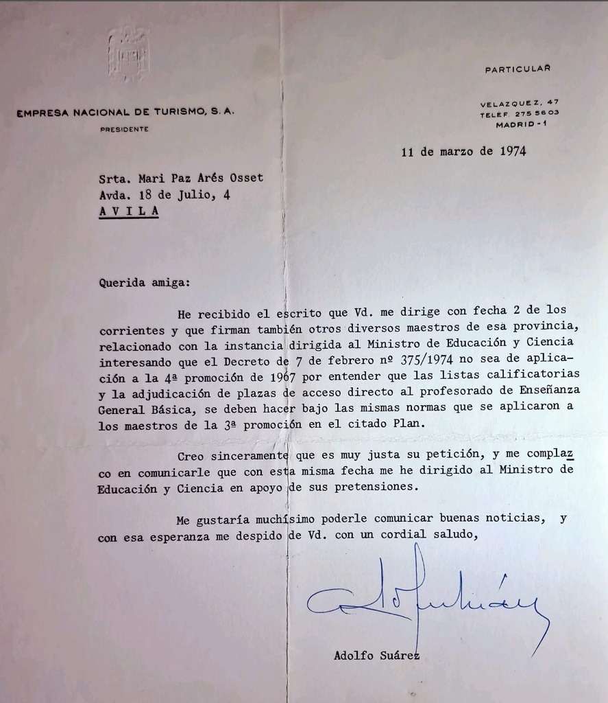

Cómo Paz entró al cuerpo de funcionarios por nota y lideró una comunicación con Adolfo Suárez para que se reconociera la excelencia.

Funcionaria sin Oposiciones
Lo que muy pocos saben es que Paz no necesitó presentarse a oposiciones para entrar al cuerpo de funcionarios de educación. Con apenas 19 años, su expediente académico brillante le abrió las puertas del funcionariado a través de una vía que hoy resultaría impensable: el acceso directo por excelencia académica.
Gracias al Plan de Estudios de Magisterio de 1967, los alumnos más sobresalientes de las Escuelas Normales —aquellos que obtenían un expediente impecable y una nota media de al menos 8 sobre 10, sin ni una sola asignatura suspensa— podían acceder directamente al Cuerpo de Profesores de EGB sin pasar por el filtro de las oposiciones. Paz fue, naturalmente, una de las elegidas.

Título de Maestra de Primera Enseñanza expedido a nombre de Doña María de la Paz Arés Osset, nacida el 29 de octubre de 1954 en Sidi-Ifni. Otorgado por S.E. el Jefe del Estado Español a través del Ministro de Educación y Ciencia, tras haber demostrado su suficiencia en la Escuela Normal de Ávila. Dado en Madrid, a 31 de julio de 1973.
📜
El Plan de 1967 y el Acceso Directo
El Plan de Estudios de Magisterio de 1967 fue una de las reformas educativas más ambiciosas de la España del siglo XX. Por primera vez, la carrera de Magisterio exigía estar en posesión del Bachillerato Superior, elevando significativamente el nivel de formación de los futuros maestros. El plan era generalista, formaba «maestros globales y tutores», y daba una importancia sin precedentes a las prácticas (todo el tercer año era práctico y remunerado).
Pero su innovación más audaz fue el sistema de acceso directo al funcionariado: el 10% de los alumnos de cada promoción con los mejores expedientes académicos —nota media de al menos 8 sobre 10 y sin ninguna asignatura suspensa en toda la carrera— podían ingresar directamente en el Cuerpo de Profesores de Enseñanza General Básica, sin necesidad de presentarse a las tradicionales oposiciones.
Este sistema partía de una premisa sencilla y poderosa: si un alumno ha demostrado excelencia constante durante tres años de formación intensiva, su capacidad ya está más que probada. ¿Para qué someterlo a un nuevo examen que, en el fondo, evalúa lo mismo que ya ha sido evaluado exhaustivamente?
⚖️
El Decreto 375/1974: la Amenaza
En febrero de 1974, el Gobierno publicó el Decreto nº 375/1974, una norma transitoria que regulaba el acceso al Cuerpo de Profesores de EGB ante la urgencia de cubrir 123.500 plazas docentes presupuestadas para ese año. El decreto establecía dos vías: el acceso directo (para expedientes sobresalientes) y el concurso-oposición libre.
Sin embargo, los criterios del nuevo decreto amenazaban con cambiar las reglas del juego para la 4ª promoción del Plan de 1967 —la promoción de Paz—. Las listas calificatorias y la adjudicación de plazas se iban a regir por normas distintas a las que se habían aplicado a la 3ª promoción, lo que significaba que alumnos igualmente brillantes podían verse perjudicados por un cambio normativo retroactivo.
Fue entonces cuando Paz, con apenas 19 años; y de la mano de otros maestros de Ávila, tomó la pluma y escribió directamente a Adolfo Suárez para defender sus derechos.
💡
¿Era Justo el Acceso Directo?
El acceso directo por excelencia académica era, sencillamente, una de las medidas más justas y eficaces que ha tenido jamás el sistema educativo español. Y merece la pena reflexionar sobre por qué.
Un alumno que mantiene un expediente sobresaliente durante tres años consecutivos, con prácticas incluidas, ha superado decenas de evaluaciones en pedagogía, psicología, didáctica, prácticas de aula y materias específicas. Ha demostrado constancia, capacidad, vocación y resistencia. ¿Qué puede demostrar un examen puntual de oposiciones que tres años de excelencia continuada no hayan demostrado ya?
Hoy en día, este sistema no se practica. Desde 1985, el acceso directo fue eliminado. Todos los aspirantes al cuerpo docente deben pasar por oposiciones, independientemente de su expediente académico. Un alumno brillante con matrícula de honor en todo recibe exactamente el mismo trato que uno que aprobó raspando: ambos deben memorizar un temario y superar un examen que, en muchos casos, mide más la capacidad de memorización que la auténtica vocación pedagógica.
Paz fue beneficiaria de un sistema que premiaba la excelencia real. Un sistema que reconocía que los mejores maestros no se forjan en un examen de oposiciones, sino en la entrega diaria, en el amor por aprender, en la dedicación constante. Quizá algún día la educación española redescubra esta verdad.
La Respuesta de Adolfo Suárez
Ante el agravio del Decreto 375/1974, Paz no se quedó cruzada de brazos. Lideró una comunicación formal dirigida a Adolfo Suárez, en representación de los maestros de su promoción en Ávila, pidiendo que las reglas del acceso directo no cambiaran retroactivamente para su generación.
Y la respuesta que recibió es un documento histórico que dice tanto de quien escribe como de quien responde.
🏛️
¿Quién era Adolfo Suárez?
Adolfo Suárez González (1932–2014) fue el político que pilotó la Transición española hacia la democracia, convirtiéndose en el primer Presidente del Gobierno elegido tras el franquismo. Fue un hombre de Estado que apostó por el diálogo, la reconciliación y la modernización de España. Pero más allá de los grandes gestos históricos, Suárez era un político que leía y respondía personalmente a los ciudadanos que le escribían.
En la época en que Paz le dirigió su petición (1974), Suárez era Presidente de la Empresa Nacional de Turismo y ya un político influyente. Lo extraordinario de esta historia no es solo que Paz se atreviera a escribirle, sino que Suárez respondió personalmente, con cercanía, con respeto, y —lo que es más importante— actuó: trasladó la petición directamente al Ministro de Educación y Ciencia en apoyo de las pretensiones de aquellos jóvenes maestros.

Carta original de Adolfo Suárez dirigida a la Srta. Mari Paz Arés Osset en Ávila, fechada el 11 de marzo de 1974. Un documento histórico que testimonia la valentía de una joven maestra y la respuesta de un político comprometido con la justicia.
Empresa Nacional de Turismo, S.A. — Presidente
Velázquez, 47 — Madrid
11 de marzo de 1974
Querida amiga:
He recibido el escrito que Vd. me dirige con fecha 2 de los corrientes y que firman también otros diversos maestros de esa provincia, relacionado con la instancia dirigida al Ministro de Educación y Ciencia interesando que el Decreto de 7 de febrero nº 375/1974 no sea de aplicación a la 4ª promoción de 1967 por entender que las listas calificatorias y la adjudicación de plazas de acceso directo al profesorado de Enseñanza General Básica, se deben hacer bajo las mismas normas que se aplicaron a los maestros de la 3ª promoción en el citado Plan.
Creo sinceramente que es muy justa su petición, y me complazco en comunicarle que con esta misma fecha me he dirigido al Ministro de Educación y Ciencia en apoyo de sus pretensiones.
Me gustaría muchísimo poderle comunicar buenas noticias, y con esa esperanza me despido de Vd. con un cordial saludo,
Adolfo Suárez
La Valentía de Pedir
Aquella carta, escrita con la misma pluma que más tarde compondría poesía y pintaría cuadros, reflejaba la esencia de Paz: la valentía de quien cree que las cosas pueden ser mejores y se atreve a pedirlo. No esperó a que alguien más lo hiciera. No miró si era "apropiado" o "políticamente correcto". Simplemente lo hizo.
Y encontró al otro lado a un político que, en lugar de archivar la carta en un cajón, la tomó en serio, la valoró y actuó en consecuencia. Un ejemplo que honra tanto a quien escribe como a quien responde.